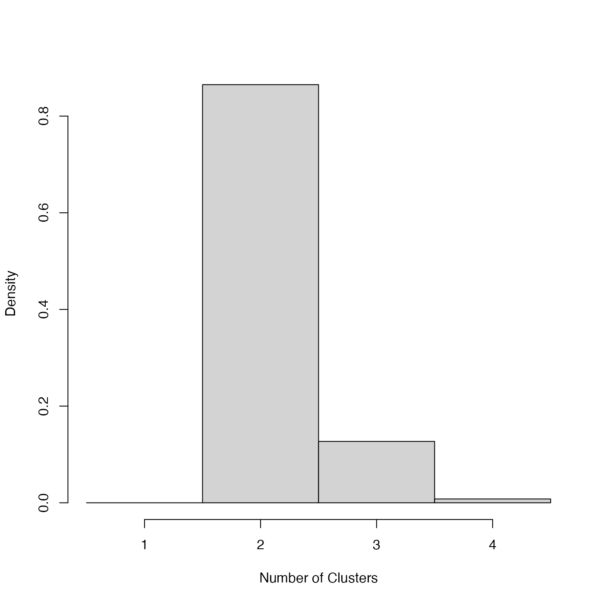

Plot Number of Calendar Age Clusters Estimated in Bayesian Non-Parametric DPMM Output
Source:R/PlotNumberOfClusters.R
PlotNumberOfClusters.RdGiven output from one of the Bayesian non-parametric summarisation functions (either PolyaUrnBivarDirichlet or WalkerBivarDirichlet) plot the estimated number of calendar age clusters represented by the \({}^{14}\)C samples.
For more information read the vignette: vignette("Non-parametric-summed-density", package = "carbondate")
Arguments
- output_data
The return value from one of the Bayesian non-parametric DPMM functions, e.g. PolyaUrnBivarDirichlet or WalkerBivarDirichlet, or a list, each item containing one of these return values. Optionally, the output data can have an extra list item named
labelwhich is used to set the label on the plot legend.- n_burn
The number of MCMC iterations that should be discarded as burn-in (i.e., considered to be occurring before the MCMC has converged). This relates to the number of iterations (
n_iter) when running the original update functions (not the thinnedoutput_data). Any MCMC iterations before this are not used in the calculations. If not given, the first half of the MCMC chain is discarded. Note: The maximum value that the function will allow isn_iter - 100 * n_thin(wheren_iterandn_thinare the arguments given to PolyaUrnBivarDirichlet or WalkerBivarDirichlet) which would leave only 100 of the (thinned) values inoutput_data.- n_end
The last iteration in the original MCMC chain to use in the calculations. Assumed to be the total number of iterations performed, i.e.
n_iter, if not given.
See also
PlotPredictiveCalendarAgeDensity and PlotCalendarAgeDensityIndividualSample for more plotting functions using DPMM output.
Examples
# NOTE: these examples are shown with a small n_iter to speed up execution.
# When you run ensure n_iter gives convergence (try function default).
polya_urn_output <- PolyaUrnBivarDirichlet(
two_normals$c14_age,
two_normals$c14_sig,
intcal20,
n_iter = 500,
n_thin = 2,
show_progress = FALSE)
PlotNumberOfClusters(polya_urn_output)
